Il lavoro parte dal livello centrale del paesaggio, dipinto con il colore scelto nella sua intensità di base.
Classi terze • colore e profondità • lavoro 2026
Paesaggi in gradazioni tonali
Un laboratorio del 2026 dedicato al valore tonale del colore. Gli studenti hanno realizzato paesaggi usando un solo colore di partenza, schiarito progressivamente con il bianco e scurito con il nero, partendo dal livello centrale della composizione.
Presentazione dell’attività
Dal tono medio alla profondità
Il percorso parte da un colore centrale, usato come tono medio. Aggiungendo bianco si ottengono i livelli più chiari e lontani; aggiungendo nero si costruiscono i livelli più scuri e vicini. Il paesaggio diventa così un esercizio di profondità, atmosfera e controllo cromatico.
Apri la presentazione su Canva ↗Fasi del lavoro
Un colore, molte profondità
Verso lo sfondo il colore viene alleggerito con il bianco, creando livelli più luminosi e lontani.
Verso il primo piano il colore viene scurito con il nero, fino ad arrivare a silhouette e zone d’ombra.
Obiettivo visivo
Valore tonale e spazio
Usare un unico colore obbliga a osservare le variazioni di luminosità, invece di affidarsi alla varietà cromatica.
Le linee del paesaggio dividono l’immagine in livelli: cielo, montagne, città, boschi, deserto o primo piano.
La gradazione tonale crea profondità e suggerisce distanza, luce, ombra e clima emotivo dell’immagine.
Elaborati degli studenti
Galleria dei lavori
La galleria presenta 14 elaborati: il doppione è stato eliminato e la copertina è stata sostituita con un lavoro più vivace in gradazioni di rosa.
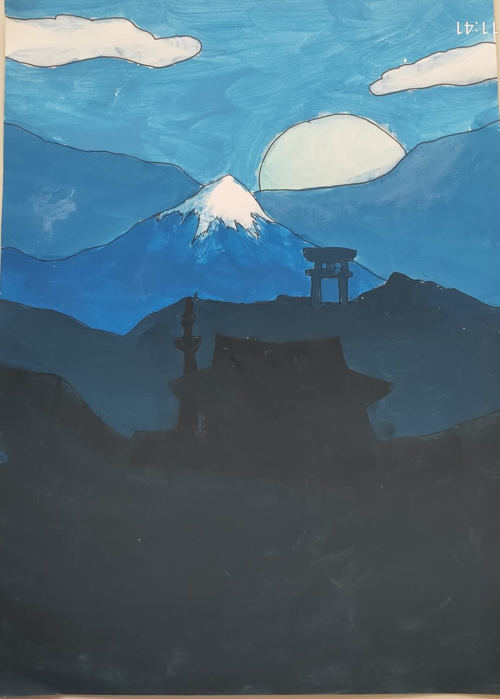
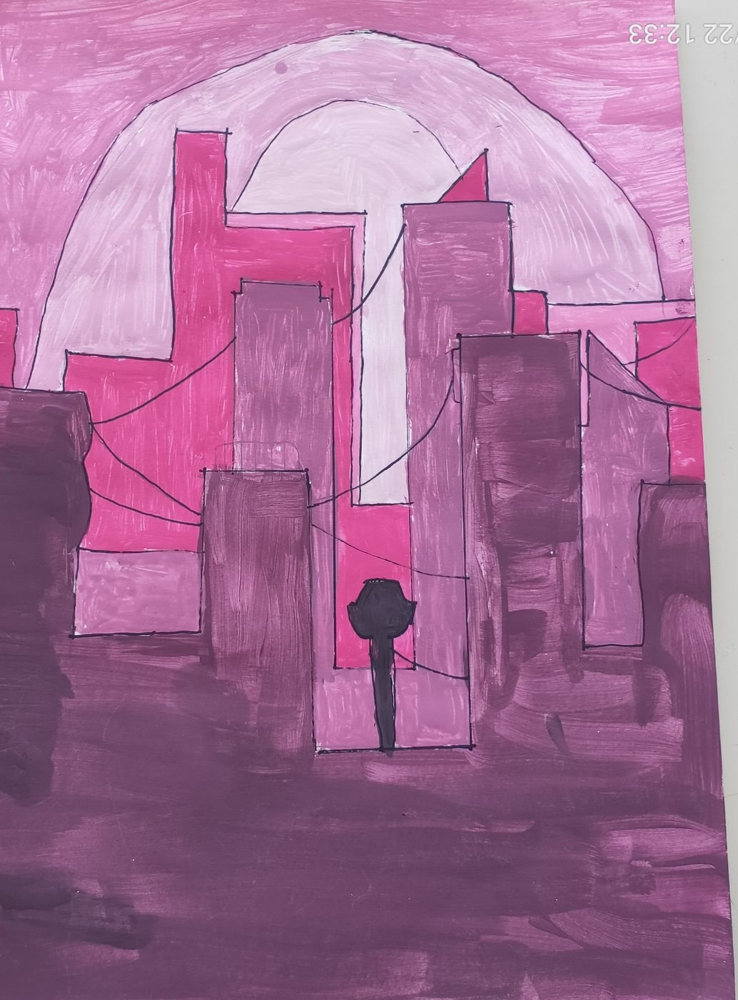
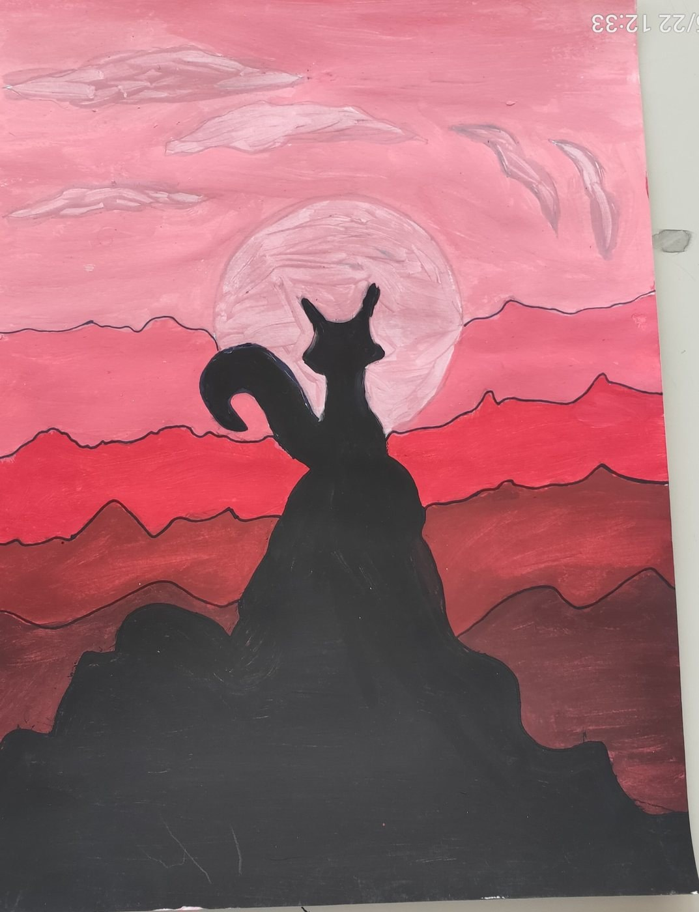
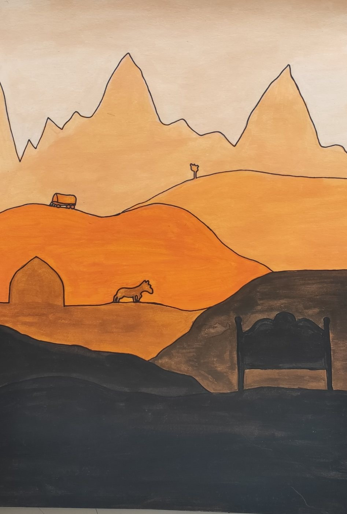
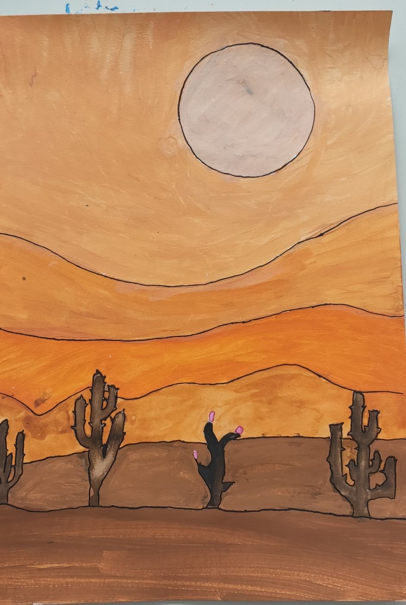
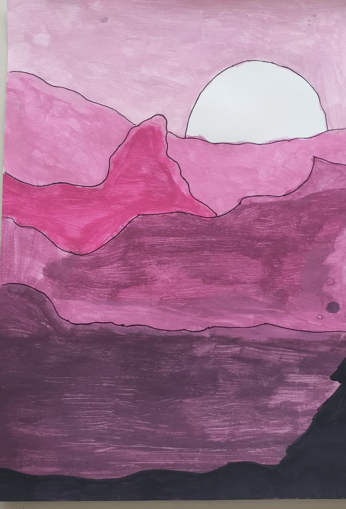
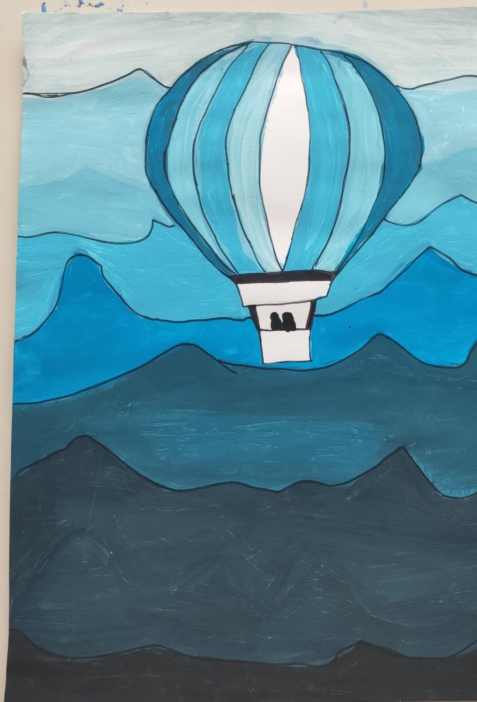
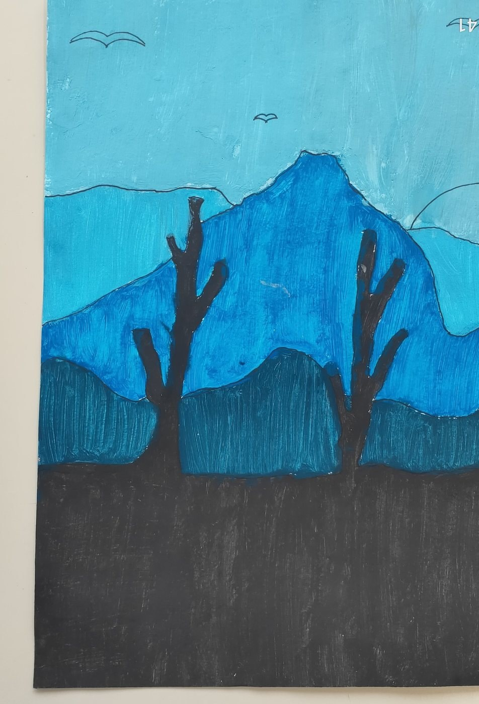
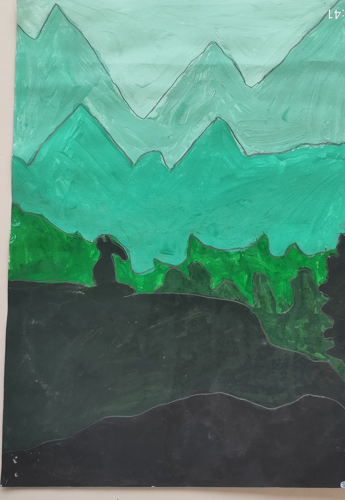
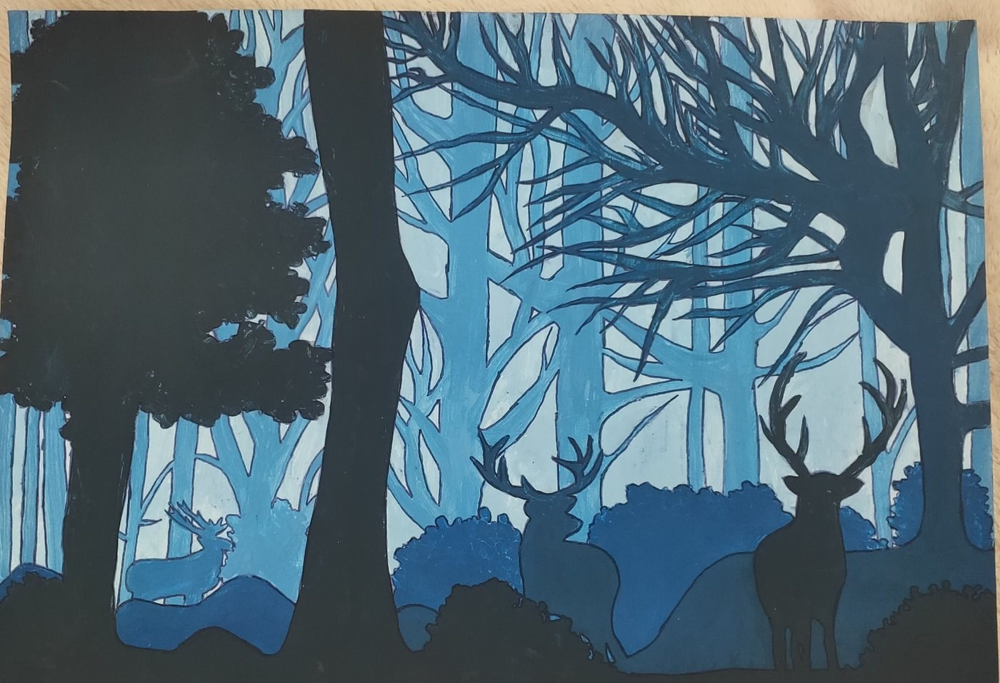
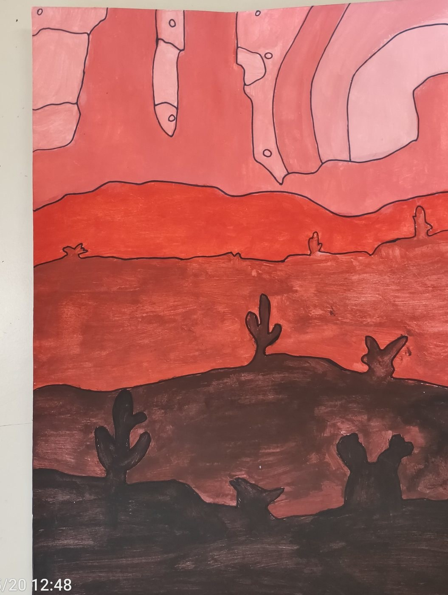
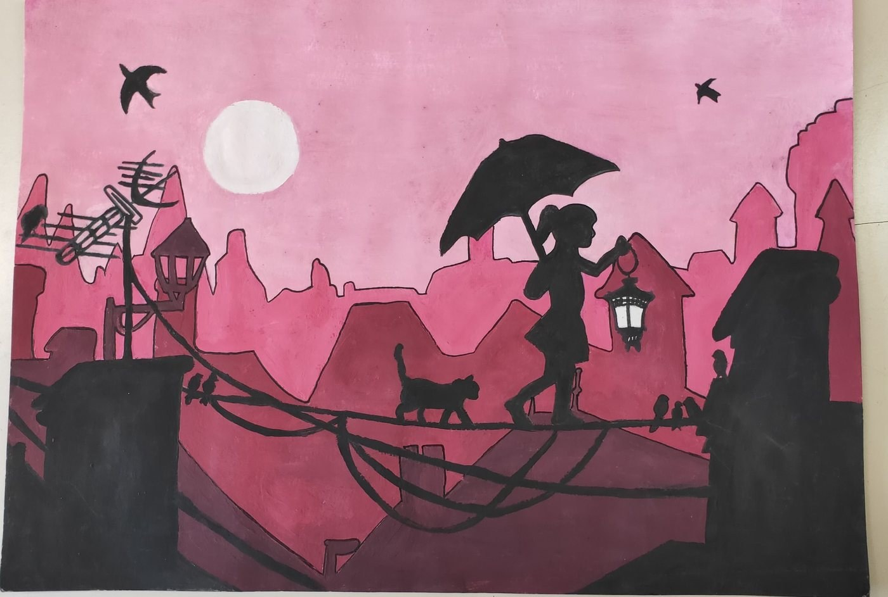
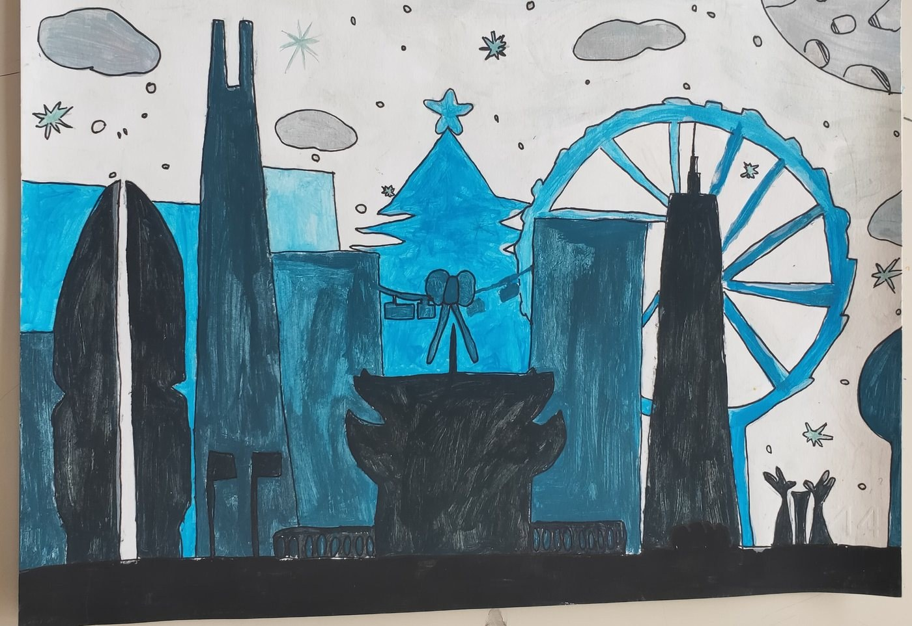
Le immagini sono state rinominate in modo neutro, ritagliate per ridurre elementi esterni e risalvate senza metadati personali. Non sono stati inseriti nomi di studenti nelle didascalie o nei testi alternativi.